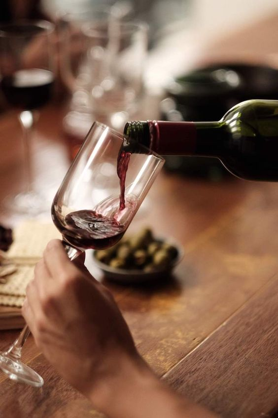
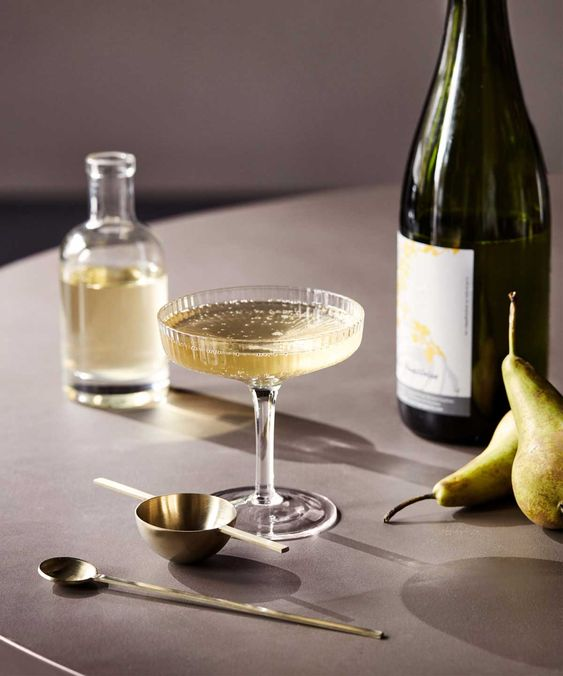
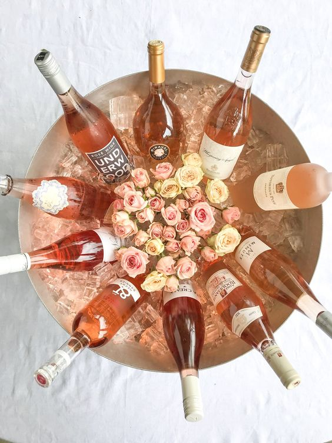

와인의 색은 다양합니다
더보기
더보기

포도껍질은 안토시아닌 색소와 함께 떫은 맛을 지닌 ‘타닌’ 성분을 함유하고 있다. 레드 와인의 경우 포도즙이 포도껍질과 함께 발효되기 때문에 많은 양의 안토시아닌과 타닌을 보유하게 되며 이것이 와인에 붉은 자줏빛 색깔과 떫은 맛을 부여한다. 특히 타닌은 와인의 구조나 골격을 형성하며 천연방부제 구실을 하기 때문에, 타닌이 들어 있는 레드 와인은 화이트 와인보다 훨씬 더 오랫동안 보존할 수 있다. 그렇지만 모든 적포도 품종이 똑 같은 양의 타닌을 함유하는 것은 아니다. 예를 들면 카베르네 소비뇽은 타닌을 상당량 함유하고 있지만, 피노 누아는 보통 정도로만 들어 있다.

레드 와인을 만들 때는 발효과정에 색소가 잔뜩 포함된 껍질을 그대로 즙 속에 남겨두었다가 발효가 끝난 후 제거하지만, 화이트 와인은 발효를 시작하기 전에 즙과 껍질을 분리한다. 샴페인도 마찬가지로, 샴페인은 세 가지 주요 품종으로 만드는데 이 중 두 가지가 적포도 품종이며 착색이 일어나기 전에 붉은 껍질을 포도즙에서 빠르게 분리해낸다.

로제 와인을 만들 때는 단순히 레드 와인과 화이트 와인을 섞는 것이 아니라, 포도를 껍질과 함께 아주 짧은 시간 동안 둠으로써 약간의 색깔이 배어 나오게 한다. 좋은 로제 와인은 밝은 빛깔을 띠고, 색의 농도는 연한 톤에서 중간 톤의 장미꽃잎 색깔을 띤다. 로제 와인은 숙성 초기에 마시며 보통 어릴수록 맛이 더 좋다. 또한 2-3년 이상 저장하는 와인이 아니기 때문에, 오래된 것은 구입하지 않는 것이 좋다.
Top